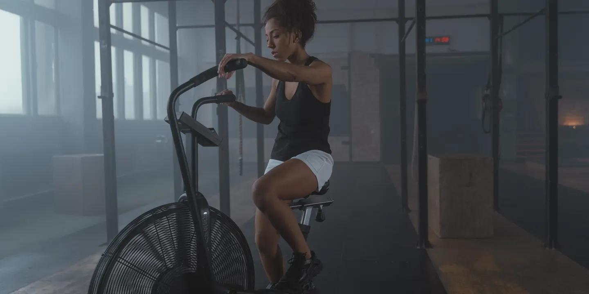
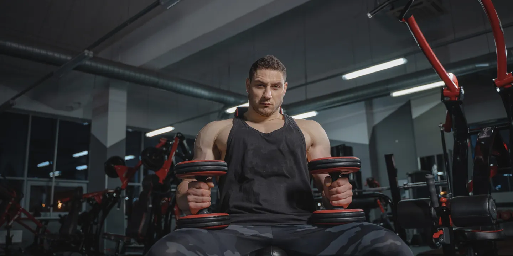
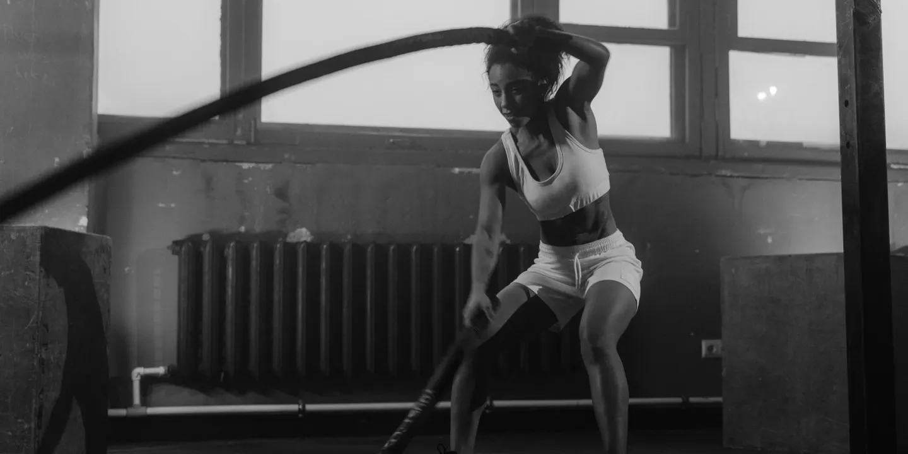

Escolha as atividades que combinam com você. Todas as modalidades recebem iniciantes, com orientação para adaptar os exercícios ao nível de cada aluno.

Conheça os treinos

Musculação
Treino com equipamentos e pesos livres, organizado de acordo com seus objetivos e sua experiência. Professores acompanham o salão e orientam a execução.
Duração: conforme o programa individual. Disponibilidade: durante todo o funcionamento.

Treinamento funcional
Aulas em grupo com circuitos que combinam força, coordenação e condicionamento. Os exercícios utilizam o peso do corpo e acessórios como cordas, elásticos e kettlebells.
Duração: 45 minutos. Nível: iniciante a avançado, com adaptações.
Ciclismo indoor
Aulas em bicicletas estacionárias com variações de ritmo e resistência. Cada participante ajusta a intensidade com orientação do professor.
Duração: 45 minutos. Nível: todos os níveis.
Mobilidade e alongamento
Práticas guiadas de mobilidade articular, controle do movimento e alongamento para complementar sua rotina de exercícios.
Duração: 30 minutos. Nível: todos os níveis.
Grade de aulas coletivas
Programação ilustrativa — confirme horários e vagas com a recepção.
Modalidade
Dias
Horários de início
Funcional
Segunda, quarta e sexta
7h e 19h
Ciclismo indoor
Terça e quinta
7h e 18h30
Mobilidade e alongamento
Terça e quinta
8h e 20h
Funcional
Sábado
9h
Como participar
As aulas coletivas estão incluídas nos planos Evolução e Completo, mediante reserva na recepção e disponibilidade de vagas. Chegue com 10 minutos de antecedência, use roupas confortáveis e leve sua garrafa de água.